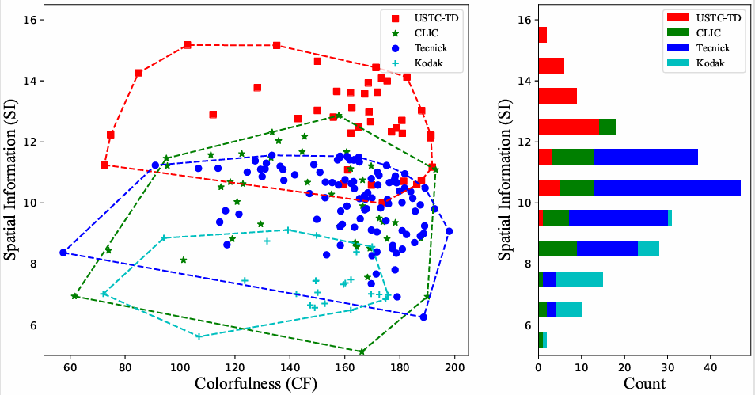
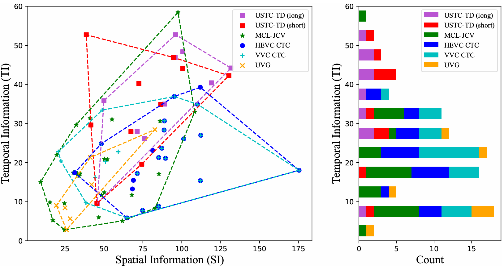

Based on the characteristics of previous image/video datasets, our proposed dataset aims to
cover
various scenarios,
and try to collect and simulate the data in the real-world
coding transmission scenes, which makes the evaluation of
image/video coding schemes more closer to the actual application.
TABLE 1. THE CONFIGURATION OF USTC-TD 2022 IMAGE DATASET.

TABLE 2. THE CONFIGURATION OF USTC-TD 2023 IMAGE DATASET.

TABLE 3. THE CONFIGURATION OF USTC-TD 2023 VIDEO DATASET.
To comprehensively
verify the wide coverage of our proposed dataset for various content elements and
qualitatively analyze the
superiority of USTC-TD, we evaluate the USTC-TD on different
image/video features and compare it with the previous
image/video common test datasets (image datasets: Kodak, CLIC, Tecnick, video datasets: HEVC
CTC, VVC CTC, MCL-JCV, UVG).
For analysis
of image/video features, we select the spatial information (SI), colorfulness (CF),
lightness information (LI),
and temporal information (TI) to characterize each dataset
along the dimensions of space, color, lightness, and temporal
correlation, which are commonly used to evaluate the quality
of dataset.

Figure 5.
The visualization of the evaluation of spatial information (SI) and
colorfulness (CF) features on different image test datasets. Scatter diagram
represents the SI versus CF, and corresponding convex hulls indicates the
coverage of different datasets. The histogram represents the number of images
under different SI scores.
Figure 6.
The visualization of the evaluation of lightness information (LI) and
CF features on different image test datasets. Scatter diagram represents the LI
versus CF, and corresponding convex hulls indicates the coverage of different
datasets. The histogram represents the number of images under different LI
scores.

Figure 7.
The visualization of the evaluation of temporal information (TI) and
SI features on different video test datasets. Scatter diagram represents the TI
versus SI, and corresponding convex hulls indicates the coverage of different
datasets. The histogram represents the number of videos under different TI
scores.